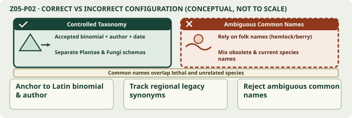

Z05-P02 · Wild foods and poisonous lookalikes · New manuscript
Accepted Scientific Names, Authorities and Synonym Tracking
Eliminate dangerous common-name collisions by anchoring every species record to accepted Latin binomials, authorities, and verified synonyms.
When it applies · Cross-referencing regional field guides, USDA PLANTS, ITIS, Bell Museum Atlas, and MyCoPortal.
Equipment · USDA PLANTS / ITIS / MyCoPortal taxonomic reference, notebook.

Actions
- Record accepted Latin binomial, naming authority, and key historical synonyms for every profile because common names like hemlock, nightshade, elder, or wild carrot span unrelated safe and lethal taxa.[B03, B04]
- Keep plant taxonomy (USDA PLANTS, Bell Museum Herbarium) strictly separate from fungal taxonomy (MyCoPortal, Bell Museum Fungarium) because naming rules and revisions diverge.[B02, B03, B05]
- Log the exact taxonomic reference date on every voucher sheet because genetic studies periodically split familiar species complexes.[B04, B05]
Failure recognition · Confusing Eastern hemlock conifer (Tsuga) with lethal water hemlock (Cicuta) or poison hemlock (Conium) through common names risks fatal ingestion.[B03, B11]
Verify · Every species profile lists accepted binomial, authority, synonym notes, and separate Plantae or Fungi schema.[B03, B04, B05]
Stop or change course · Stop relying on any plant or mushroom note that supplies only a folk common name without a verified Latin binomial.[B03, B04]
Evidence and editorial notes
- B02 · Bell Museum (UMN) · Bell Museum Specimen Collections Portal (Current web edition)
- Section: Curated herbarium and fungarium voucher specimen standards · Conditions: Corroborating species traits against documented physical vouchers
Support: Curated herbarium and fungarium vouchers link accepted scientific names, collection locality, habitat, and morphology to verifiable specimens.
Limitations: Image-search labels and crowd-sourced guesses cannot substitute for vouchered keys and qualified taxonomic review. · Conflicting evidence: None noted.
Editorial note: Core P19-A voucher discipline. · Specialist reviewer: Herbarium / fungarium curator
Primary source · checked 2026-11-25 - B03 · USDA NRCS · PLANTS Database: Accepted Taxa and Regional Distribution (Current web edition)
- Section: Accepted botanical nomenclature, authorities, and synonyms · Conditions: Standardizing plant scientific names across regional floras
Support: Tracking accepted Latin binomials, taxonomic authorities, and legacy synonyms prevents dangerous common-name confusion.
Limitations: Common names like hemlock, nightshade, elder, or wild carrot refer to unrelated toxic and non-toxic taxa across regions. · Conflicting evidence: None noted.
Editorial note: Prevents common-name misidentification. · Specialist reviewer: Plant taxonomist
Primary source · checked 2026-11-25
Current assessment · A04-B03 (2026-11-25) · Reopened: earlier closure narrowed (A04): Name crosswalk is a documentation method. A catalog search cannot establish a name as current across treatments or prevent a field misidentification. Limits: Specialist review PENDING (Plant taxonomist); publication HOLD. All release decisions pending. - B04 · USGS / ITIS · Integrated Taxonomic Information System (Current web edition)
- Section: Integrated Taxonomic Information System verification · Conditions: Cross-checking scientific binomials and taxonomic hierarchy
Support: Standardized taxonomic identifiers keep plant and fungal hierarchies auditable across updates.
Limitations: Taxonomic revisions split or reassign species; record check date and authority on every profile. · Conflicting evidence: None noted.
Editorial note: Maintains taxonomic schema rigor. · Specialist reviewer: Systematic biologist
Primary source · checked 2026-11-25 - B05 · MyCoPortal · North American Fungal Voucher Collections Portal (Current web edition)
- Section: Separate fungal voucher collections and microscopic/macro traits · Conditions: Documenting macrofungi across North American collections
Support: Fungal taxonomy requires distinct anatomical schemas (cap, gills/pores/teeth, attachment, ring, volva, spore print, substrate, and often microscopy).
Limitations: Fungal species complexes frequently overlap macroscopically; photos alone cannot confirm edibility. · Conflicting evidence: None noted.
Editorial note: Keeps botanical and fungal schemas separate. · Specialist reviewer: Qualified mycologist
Primary source · checked 2026-11-25
Current assessment · A04-B05 (2026-11-25) · Open: support partial or missing (A04): Records can supply vouchers. No universal schema covers all fungi. Need taxon-specific monograph, angle and microscopy requirements. Limits: Specialist review PENDING (Qualified mycologist); publication HOLD. All release decisions pending. - B11 · CDC · Water Hemlock Poisoning — Maine, 1992 (1994)
- Section: Maine case description and editorial note · Conditions: Suspected water-hemlock ingestion
Support: Water hemlock ingestion can cause severe poisoning including seizures. Suspected poisoning needs prompt emergency or poison-centre advice.
Limitations: The case concerns Cicuta maculata. It cannot identify a plant outdoors or establish Conium toxin mechanism, dose, or onset. · Conflicting evidence: Conditions are recorded in the A03 audit.
Editorial note: Mandatory Z05 lethal Apiaceae stop rule. · Specialist reviewer: Botanist and medical toxicologist
Primary source · checked 2026-11-25
Source lineage · New manuscript (Z05 P19-C taxonomy) · Classification · New manuscript.